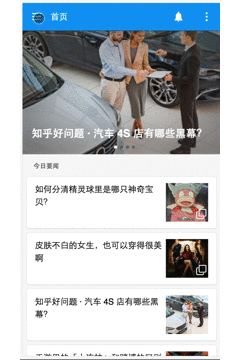

Architecture
大约一周前喻导从掘金vue版块看到一个vue实现知乎日报的项目，然后顺手又一次向我使出大安利术。终于在他煽动下，我大概看了下前辈项目的源码（我去，我竟然能看懂），之后一边看文档一边自己也试着实现了出来。因为之前一直在学习React生态圈相关，对component，container，state，生命周期等概念有了理解，加上vue本身的易用原则，文档又写的详细易懂。所以总体下来自己在一边感叹vue API优美的同时（跟风），也写的很爽。
Introduction
知乎接口跨域限制所以没能提供在线版本 orz

项目历时一周，因为暑假自己留校学习，基本没有受到干扰，除了吃饭睡觉都在码代码。
开发环境也从windows过度到了mac平台。 ——家里的应援 (ง •_•)ง
Architecture
- JavaScript: Vue + Vue-Router + Swiper + Fastclick
- Css: Sass + PostCSS
- build: Npm + Vue-cli [Webpack]
Vue + Vue-Router Abstract
这里简单介绍vue + vue-router ，可以跳过。
Vue
Vue是种“轻 巧”的MVVM前端框架，(目前官网的版本是1.0.x) 其中ViewModel层由vue提供。在vue中我们通过具有特殊前缀的HTML 属性来实现数据绑定，也可以使用常见的花括号模板插值，或是在表单元素上使用v-model双向绑定。
Vue组件可以理解为预先定义好了行为的ViewModel类。一个组件内可以预定义很多选项，官方文档中有详细的列举，除了基本的template，props，data，methods外，还有组件生命周期不同阶段调用的hook函数，自定义事件events等选项可以配置。
组件间通信也是非常重要的一环，父－>子可以通过props传值，或配置ref来拿到子组件。或者自定义events后，父组件里v-on绑定事件给子组件，子组件调用$despatch()触发相应事件。由于绑定和触发的代码是分散在各个组件中，所以当组件间的通信复杂起来时，你需要vuex将容器中的状态存储在顶层中来进行管理分发。
那么，如何利用它进行组件化开发呢？Webpack + 官方提供的vue-loader 直接搞.vue单文件格式来书写Vue组件，通过vue-devtools调试。另外安装对应的Webpack loader后template里还支持方言呢。 个人感觉模版语法之与React的jsx语法还是模版写起来更明确些。
同时官方提供了Vue-cli这简单粗暴的东西帮你构建项目模版。 搞起来就是贼快。
此外还有，令人期待的Vue 2.0。
Vue-Router
Vue-Router是Vue官方提供的路由器。用来帮助Vue项目构筑路由系统。使用router.map()配置app中的路径后，除了使用实例方法外进行切换外，使用在组件上配置v-link=””进行跳转。vue-router将路由跳转的过程细分，用户可以通过配置容器组件中route项调用跳转过程中不同阶段的hook函数，以此来在切换过程中做其他事情，比如请求数据，调用methods什么的。
Views
项目包含以下页面：
|
|
部分实现：
- 初始列表的动态加载以及列表重定位到上次浏览的地方。这部分代码写在main-default和detail组件中。通过路由系统的钩子函数，在激活阶段调用data()函数向windows绑定添加列表和修改顶部日期的事件，并判断当前url的name。将当前的scrollTop存在sessionStorage中，在detail的跳转中重定位列表的scrollTop。
- GET请求部分没有使用Vue-Resource而使用了fetch()，开始是听说它可以帮我解决跨域的问题，似懂非懂的用了起来，结果失败了。不知道是不是header配置写的不对。本地开发阶段用chrome插件Allow-Control-Allow-Origin拿到了数据。 orz
- 主页侧滑列表的show hide由于多个地方可以控制，我将方法写在了util里一一绑定了事件。当这样的情况变多时就会越发难以控制。
- 所用到的图片，参考链接。
Components
项目功能趋于展示，全局只写了一个events…大部分参数分析接口数据后用props传下去就可以了。
简单介绍下组件们
- comments-comp——-单个评论
- detail-content———–内容主体
- detail-header————头部一号
- list-comp——————首页列表里的单个项
- list-header—————-头部二号
- main-default————-初始列表页，import了slider和list-comp
- main-theme————–主题内容主体，import了list-comp
- sidebar———————侧滑列表。手动斜眼I，偷懒没写滑动事件。
- slider————————初始页的轮播。手动斜眼II，Swiper写的。
部分实现与问题：
- 第一次以组建化思想写的完整项目，一开始就知道怼头部…… (hahahh
list-comp实现了复用，其实每次有新的需求时，都是返回去稍微改改。
comments-comp单个评论组件里格式化时间戳，接口返回的评论时间是”time”: 1413600071的格式。
这里贴下格式化时间戳的代码，当然不是我写的。
123456789101112131415161718192021222324252627282930313233/*格式化时间戳1469175239 ｜ fommatTime "yyyy-mm-dd hh-mm-ss"*/const formatTimeAPI = (timeStamp, fmt) => {// author: meizzif(!timeStamp)return ''var _timeStamp = parseInt(timeStamp)if(_timeStamp.toString().length === 10)_timeStamp *= 1000!fmt && (fmt = 'yyyy-mm-dd')var t = new Date(_timeStamp)var o = {'M+': t.getMonth() + 1,'d+': t.getDate(),'h+': t.getHours(),'m+': t.getMinutes(),'s+': t.getSeconds(),'q+': Math.floor((t.getMonth() + 3)/ 3),'S': t.getMilliseconds()}if(/(y+)/.test(fmt))fmt = fmt.replace(RegExp.$1, (t.getFullYear() + '').substr(4 - RegExp.$1.length))for (var k in o) {if (new RegExp('(' + k + ')').test(fmt))fmt = fmt.replace(RegExp.$1, (RegExp.$1.length ===1)? (o[k]) : (('00' + o[k]).substr((''+o[k]).length)))}return fmt}
Finally
感谢喻导，接触前端一年了都是一个人在闷头苦学，走了不不知道多少弯路。后来认识喻导，几次交流都一直鼓励我动手去做，东西先用起来。现在我越来越自信了，前端之路也会走的更加坚定。最后祝愿你的教育事业能一帆风顺。
感谢yatessss，项目里给了我不小的帮助。超nice的前辈。
最后要来一剂安利，Vue非常容易上手，文档好读，外加Vue-cli，vue-devtools。你不想来一套吗。